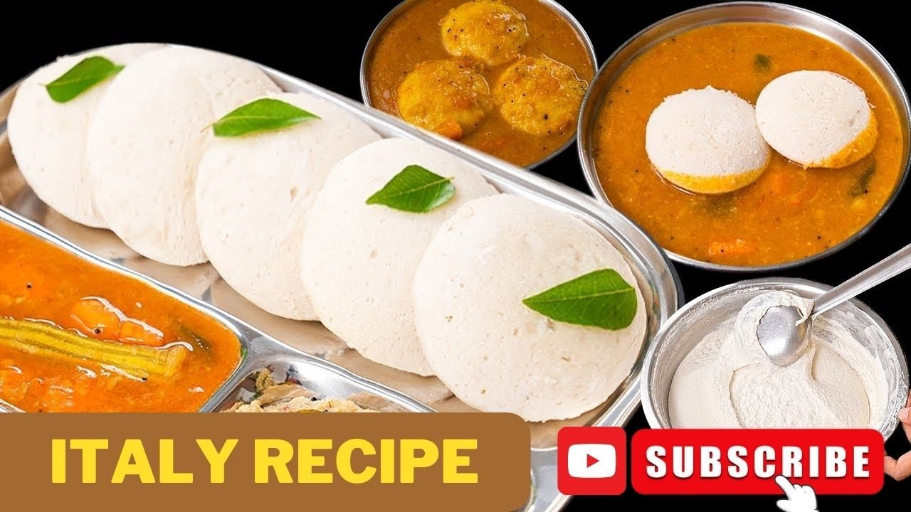
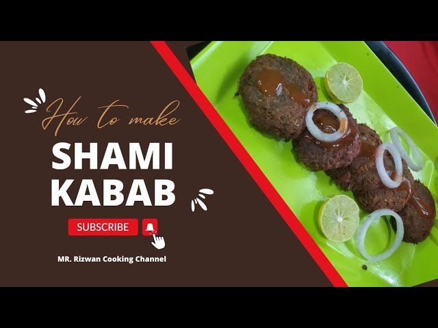

चावल दाल की इडली बनाने की विधि - सबसे नरम soft idli recipe MR.Rizwan Cooking Channel

10 minutes mein banne wali bachi Hui daal ka seera | MR. Rizwan | cooking channel

Shami Kabab Recipe | Rasile Shami Kabab | How To Make Shami Kabab